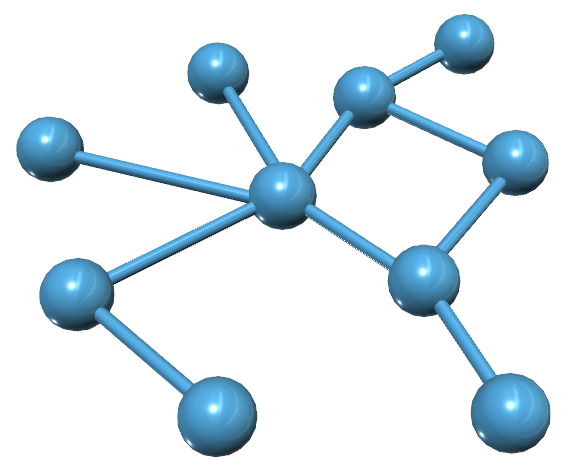

Computing at the aggregate level
Danilo Pianini, Mirko Viroli, Roberto Casadei
- "Situatedness"
- Unpredictability (humans)
- High density
- Heterogeneity
- Mobility
- Openness
- Safety concerns
Engineering this thing I
Throw everything at the cloud, and let it process it
...somehow- Lots of information is only locally relevant
- Misuse of bandwidth and computational power
- Does not play well with high densities
- Privacy concerns
Engineering this thing II
Rely on opportunistic communication
write software with nature inspiration- Communication issues
- Lack of composability
- Local-to-global (kinda bottom-up)
-
Side effects on multiple scales
Local-to-global
something as small as the flutter of a butterfly’s wing can ultimately cause a typhoon halfway around the world
- Controlling emergency is hard
- Engineers don’t like lack of control
The good part
Basically the foundation of
- Stigmergy
- Nature inspired coordination
simple behavioural and communicational rules, global effects
Side effects on multiple scales
simple local behaviours
↓↓↓
complex global behaviour
effects reified on different scales
The bad part
emergent behaviour is difficult to forecast
simple behavioural and communicational rules, global effects
↓↓↓
small mistakes, global consequences
The bad part
- hard to engineer properly
- no composability
- poor reusability
nature can bet on numbers, we can't.
Aggregate programming: idea

devices
Aggregate programming: idea

logical network
Aggregate programming: idea
each device holds some values
Aggregate programming: idea

interpret such values as a field in space-time
Aggregate programming: idea
(computational field)
Aggregate programming: idea
↑↑↑ Compute on these things ↑↑↑
Aggregate programming
- our machine is the ensemble of situated devices
- computing happens by means of combining fields
straightforward mapping to functional languages
- compositionality by function composition (divide et impera)
- nothing new, software people know them already!
- networking and platform hidden under the hood
↓Nice place to work↓
Reusable aggregate library
Self-stabilizing blocks
Language primitives
Interpreter
Device abstraction (sensors, actuators)
Underlying platform (cloud? actors? LoRaWAN?)The feel of it
red means overcrowding
The feel of it
import ...
// A field counting people around each point in space
def countNearby(range) {
let human = rep(h <- env.has("human")) { h };
sumHood PlusSelf(
mux(human && nbrRange() < range) { 1 } else { 0 })
}
actual code from Modelling and simulation of Opportunistic IoT Services with Aggregate Computing
The feel of it
import ...
// A field estimating people density in an area
def densityEst(p, range, w) {
countNearby(range) / (p * pi * range ^ 2 * w)
}
(actual code from Modelling and simulation of Opportunistic IoT Services with Aggregate Computing)
The feel of it
import ...
// A field of boolean, true if the area is overcrowded
def dangerousDensity(p, range, dangerousDensity, groupSize, w) {
let partition = S(range, nbrRange);
let localDensity = densityEst(p, range, w);
let avg = summarize(partition, sum, localDensity, 0)
/ summarize(partition, sum, 1, 0);
let count = summarize(partition, sum, 1 / p, 0);
avg > dangerousDensity && count > groupSize
}
(actual code from Modelling and simulation of Opportunistic IoT Services with Aggregate Computing)
The feel of it
import ...
/* A field that partitions space in safe, overcrowded,
and overcrowding areas, given a certain time window */
def crowdTracking(p, range, w, maxDense,
dangerThr, groupSize, time) {
if (isRecentEvent(densityEst(p, range, w) > maxDense, time)) {
if (dangerousDensity(p, range, dangerThr, groupSize, w)) {
overcrowded()
} else { atRisk() }
} else { none() }
}
// Application code: crowd density tracking in a 60s window
crowdTracking(0.005, 30, 0.25, 1.08, 2.17, 300, 60);
(actual code from Modelling and simulation of Opportunistic IoT Services with Aggregate Computing)
Engineering toolchain
- A higher order calculus
- Two practical languages
- Multiple simulators (it’s easy to attach them)
 Alchemist
Alchemist
- Supports both Protelis and Scafi
- NASA WorldWind
 Protelis
ProtelisIntegration
- Requirements:
- Devices exchange data with their “neighbors”
- Whatever a “neighborhood” is
- Devices exchange data with their “neighbors”
- No assumption on the deployment
- No assumption on communication means
Integration
Computation may happen:
- on each device
- on the edge
- on the cloud
Integration
No magic, deployment-specific complexity is simply incapsulated under the hood
divide et impera
- Write the application thinking of what it should do
- Write the platform thinking of where it should run
- And reuse it for future applications
Silver bullet?
nope
- Very handy for expressing the "coordination"
- Other paradigms are better at the good ol' "local" programming
- e.g. I wouldn't develop a GUI in aggregate...
- (although technically doable)
- The final software is usually a mixture of paradigms
abstraction is not a free lunch
abstraction raised by hiding networking and protocols
- harder to optimize for bandwidth saving
- application-specific optimization at the platform level breaks the paradigm
- security is a serious concern
- Some work on application-level countermeasures
- Platform-level attacks disrupt the paradigm
- A work on this is being presented right now
Conclusion
- engineering applied to the problem, regardless of the underlying platform
- first what
- then where
Conclusion
- language-based, top-down, global-to-local
- easier design
- high composability
- better guarantees
Conclusion
- rich set of tools
- lots of work to do on optimization and security
enabling technology for projects dealing with the Internet of Things and Smart Cities
Appendix: play with it!
A tutorial for learning Protelis is available
Scafi is better learned by reading a paper (for now)